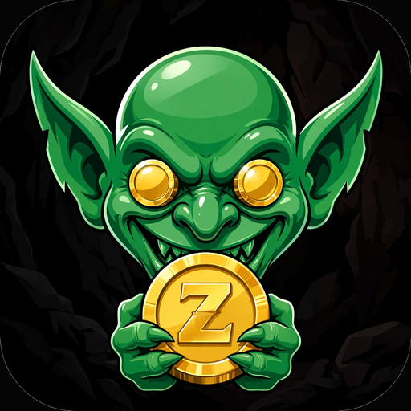

Zert Goblin
STACK ZEC. AVOID NORMALCY.
Zert Goblin is a 45-second arcade hunt built for the Solana Seeker. Zert races across four lanes while ZEC coins and hazards fall: grab the gold, build combos, fill the Frenzy meter, and go feral in Goblin Mode — where hazards become snacks.
Three ways to hunt
- Classic — one stream, quick ramp.
- Double Frenzy — two streams, faster fall.
- Triple Frenzy (Boss) — three streams, boss pace.
The Deep Cave leaderboard keeps every player's best run per mode, up to 25 goblins deep. No seeded rivals — every name on the board is a real run.
Arcade pricing, honestly
| First 3 plays | Free, after connecting a wallet (connecting is free — your wallet just signs a short proof message; no funds move) |
|---|---|
| Single play | 25¢ |
| Four-play pack | $1 |
| Lifetime pass | $5 — unlimited hunts |
| Skins (cosmetic only) | $2.50 each · skin pack $2.50 per skin you don't own yet ($17.50 for the full set) · $50 Zald God limited edition, capped at 100 holders |
Payments are real and verified on-chain: checkout defaults to USDC at fixed dollar amounts, and SOL is also accepted from a live server-issued quote bound to your wallet. A purchase is granted only after the payment verifies on the Solana blockchain. The game never holds funds and never holds your keys. All sales are final. Payments are public Solana transfers to the game's treasury wallet; your wallet address, the amount and the time will be visible on-chain to anyone.
The fine print
A loving parody game. Not affiliated with Mert, Helius, or Zcash.